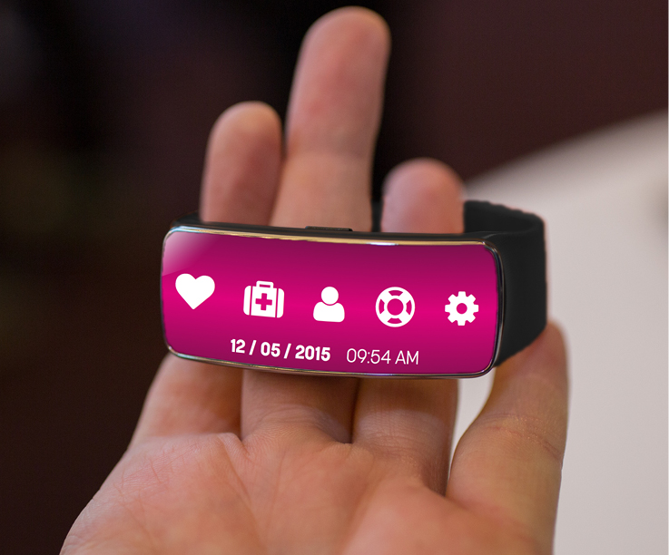
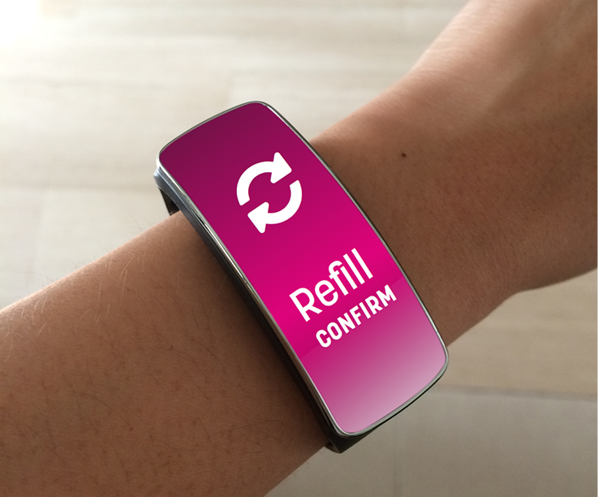

cync
Cync is an Internet of Things application for wearable technology that enables the user to be proactive in maintaining a healthy lifestyle, in sending health insurance information, and in keeping track of personal health. Shown is the dashboard showing links to Vital Signs, Health Insurance, User Profile, Medical Support, and Settings respectively.
Iteration 2

Process Work
Process work will be uploaded later this month. Patience, friend.

